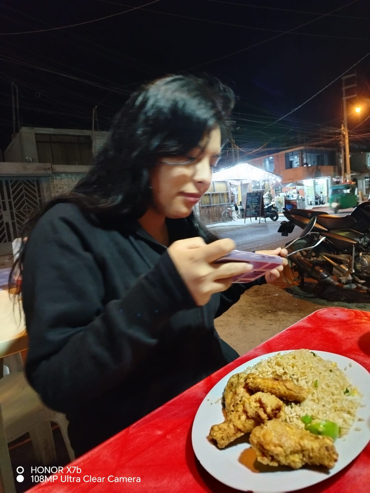
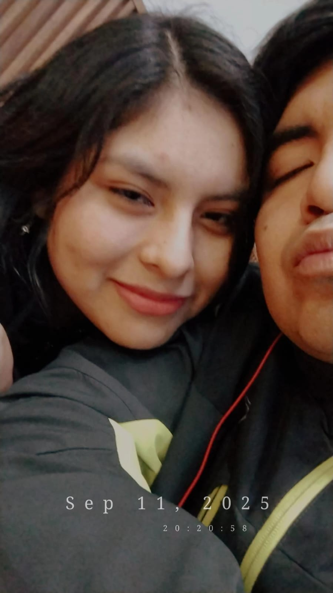
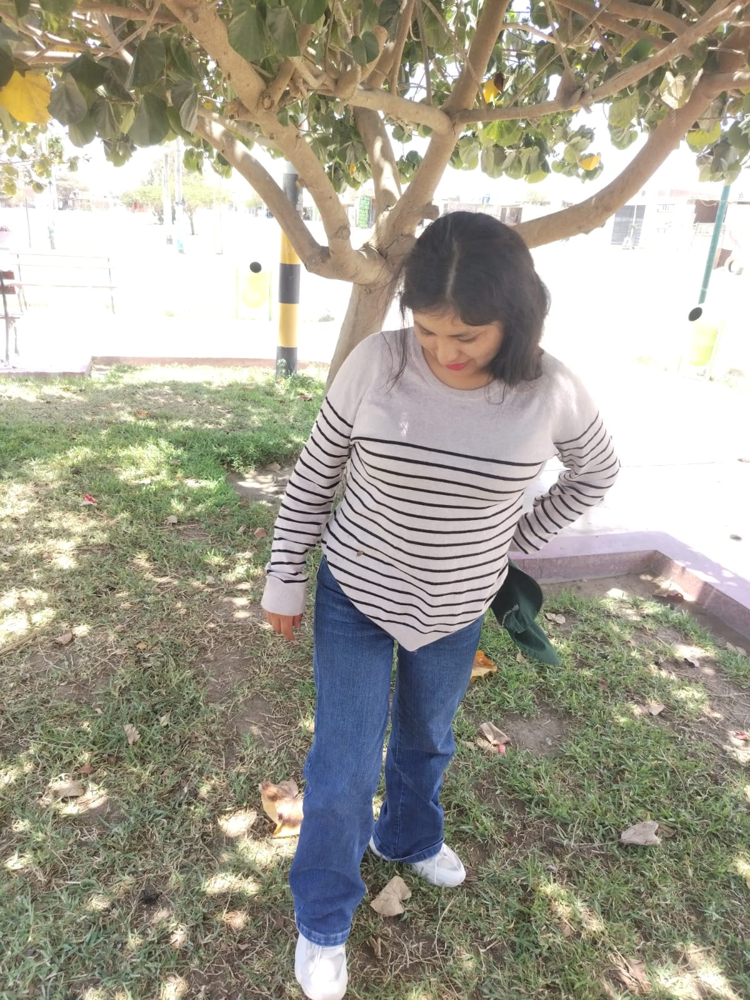
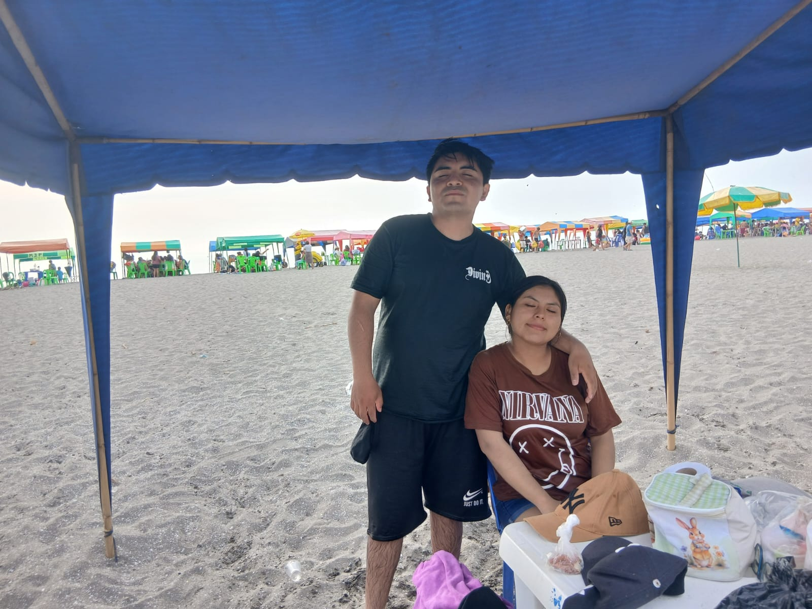
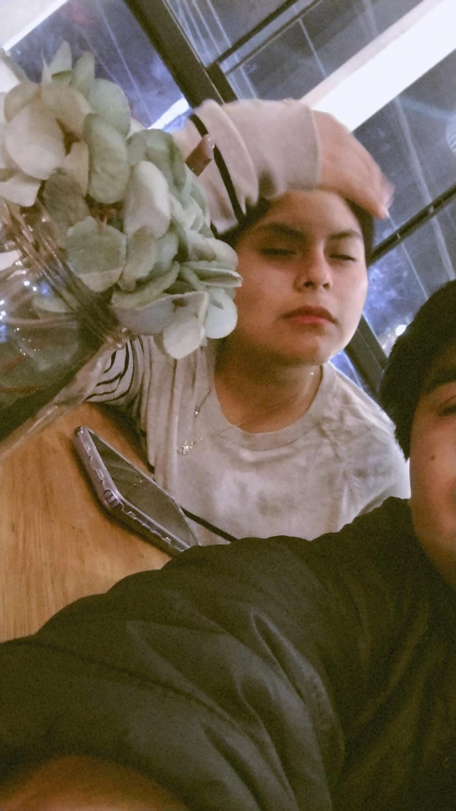
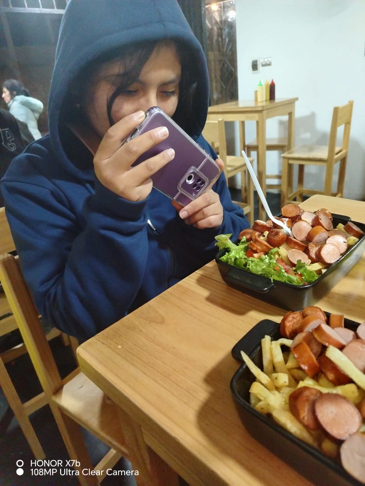
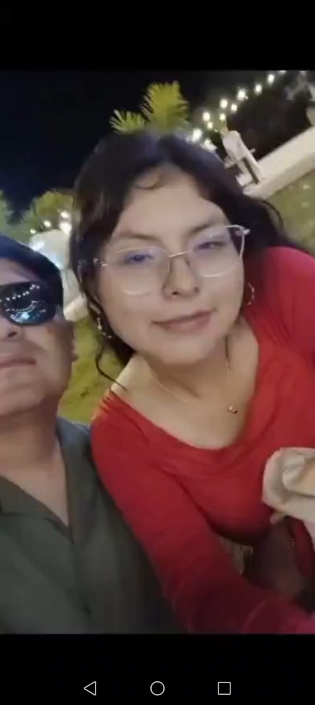
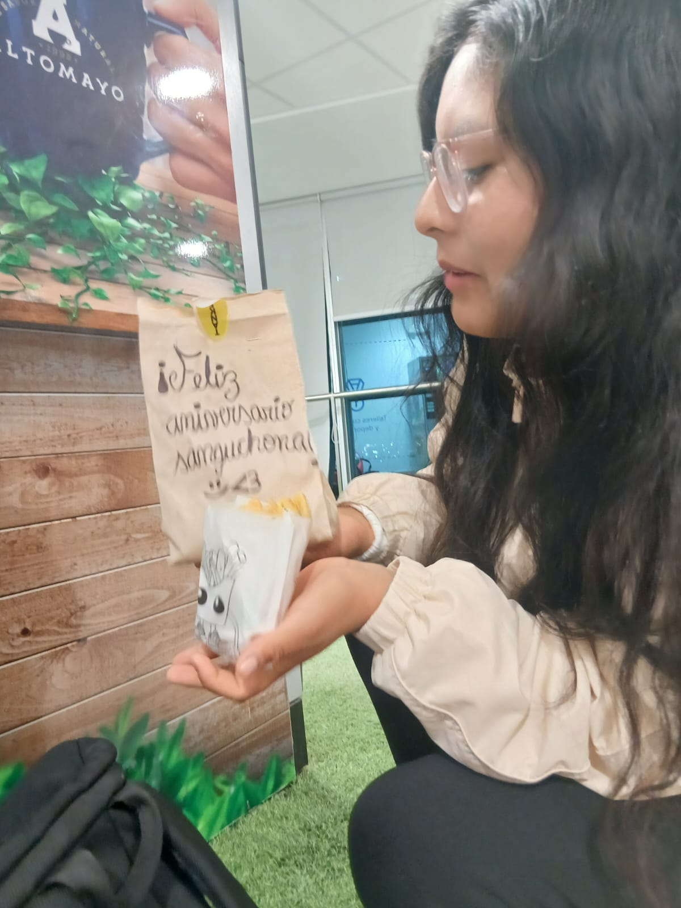

Aquí está nuestra un poco de nuestra historia :3
Ver nuestra historia ↓
nuestro primer chaufita, bueno uno de los primeros jejeje, cuando estabas toda de negra creo que estabas de luto, jajaj tu sabes que el negro te queda muy bien 💛

Nuesto primer chicharroncito de poshito, fue un dia espectacular que no olvidare tantas risas, recuerdos y el chimi chimi no puede faltar 🌸

Nuetro primer viajecito en la poderosa, fue un momento divertido verte hechada ahi en la grama, jajaj todo era risas hasta que casi chocamos xd🌸

Nuestro primer viaje juntos a la playitaaa, esa playa de aguas marronas jaja muy divertido cuando llego una ola y te revolco que buenaaa jajajaja, toda asustada parecias una sirena bronceada, esa ropa termino arena nmz🌸

la primera vez que fuimos a una cafeteria, tabas media cansada y con sueño eso no quita que nos divertimos con ese cafe con naranja, malasooo. nosotros ahi intentando adivinar la carta pq estaba en ingles 🌸

una de las muchas salidas que tuvimos saliendo de la Uni, fuimos al poderosisimo TANKEADOS, ahi no comias mucho pero ahoraaa, que rica gordita pa comer, se comio medio pollo ayer🌸

Nuestro primer cierre de campaña juntos, a pesar de peleamos nos divertimos con los bailes, ahi fue cuando los de la oficina empezaron a sospechar de nosotros jeje 🌸

Nuestro mesario, cuando te lleve la hamburguesa y nos pusimos a afuera de tu salon sentados en el piso, ¿por que? porque somos bandidos, ya tu sabe, pkmz🌸
Sanguhe, sé que no soy la mejor persona. A veces reniego mucho, no sé tratarte como te mereces, soy muy frío y poco comprensivo... pero quiero que me dejes quererte. Quiero estar contigo, te quiero bastante. En todo este tiempo que hemos estado juntos, hemos pasado por muchas cosas y momentos que jamás olvidaré. Sé que peleamos mucho y que a veces somos diferentes, pero creo que eso es justamente lo que nos hace estar unidos: yo aprendo de ti y tú de mí. No te imaginas todo lo que haría por ti. Solo te pido que me tengas un poco de paciencia. Si fallo, no me juzgues ni me hables mal; mejor enséñame, corrígeme. Sé que soy terco, pero te prometo que aprenderé y mejoraré para estar bien contigo. Vamos a hacer que esto funcione. Gracias por darme tantos momentos a tu lado. Sé que aún nos faltan muchas cosas por experimentar: más recuerdos, más viajes y más anécdotas que en el futuro recordaremos con gracia y nos reiremos juntos. No permitiremos que esto se termine por peleas o malos entendidos. Te prometo quererte hasta que tú me lo permitas. No olvides lo mucho que me importas. Te quiero mucho, mi sanguchona 💌